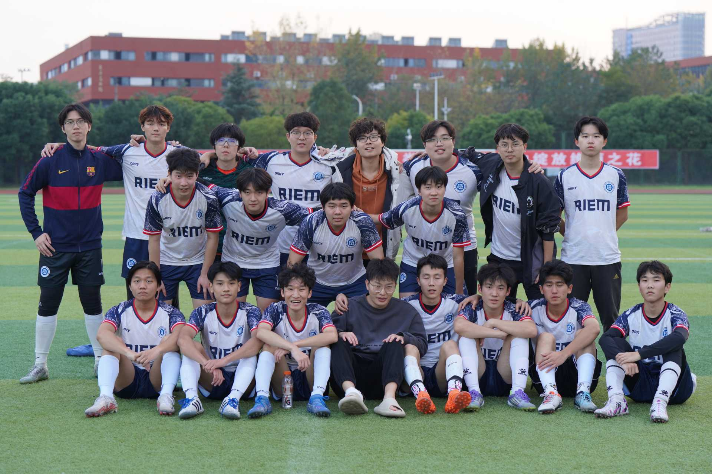
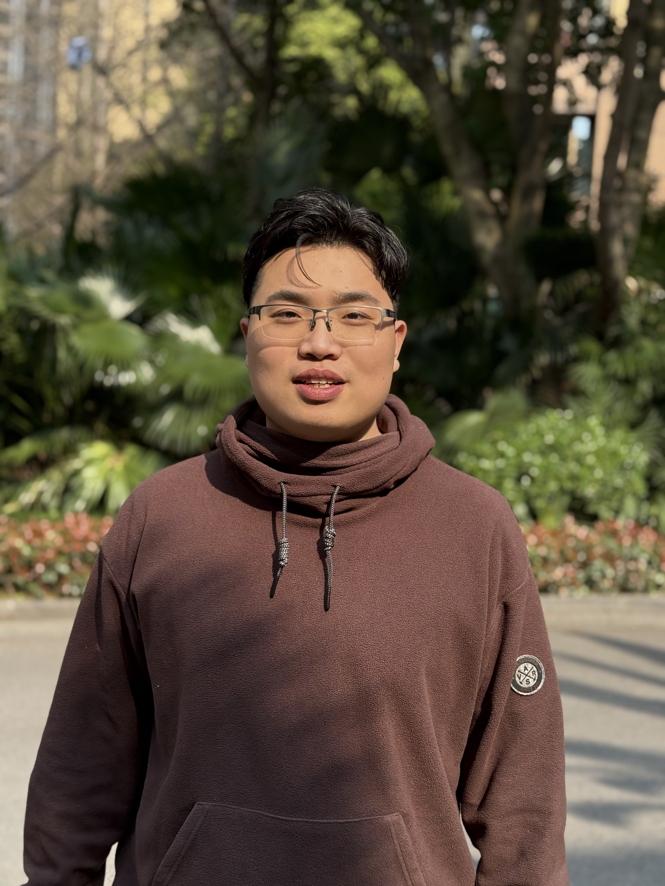
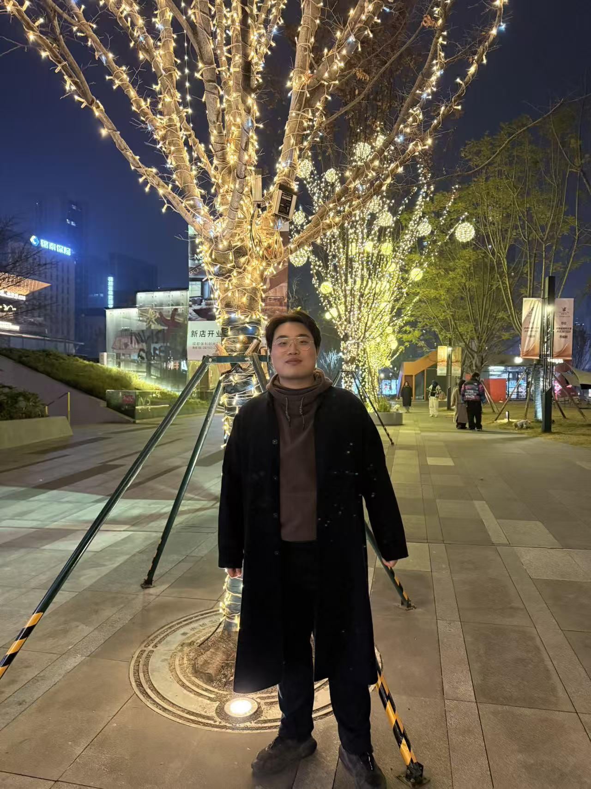
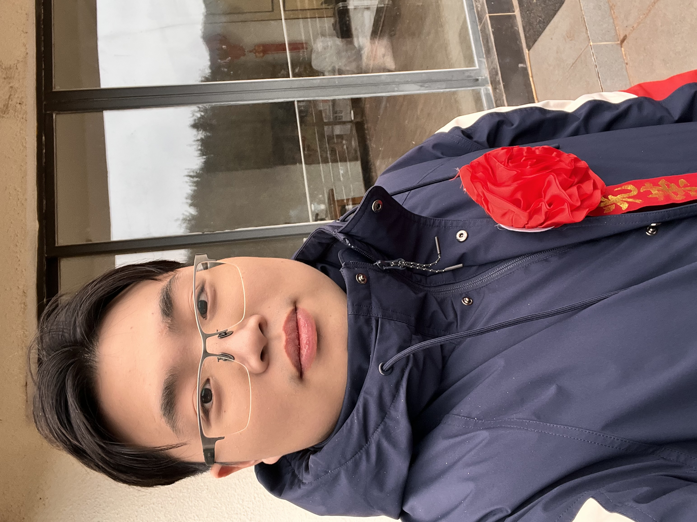
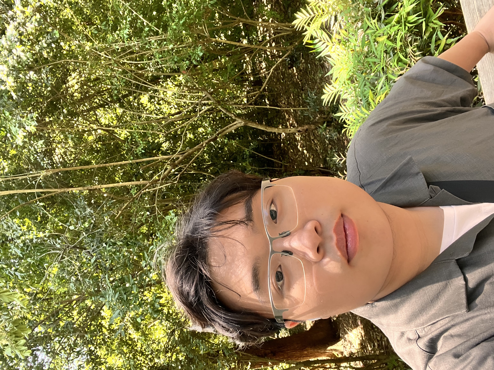
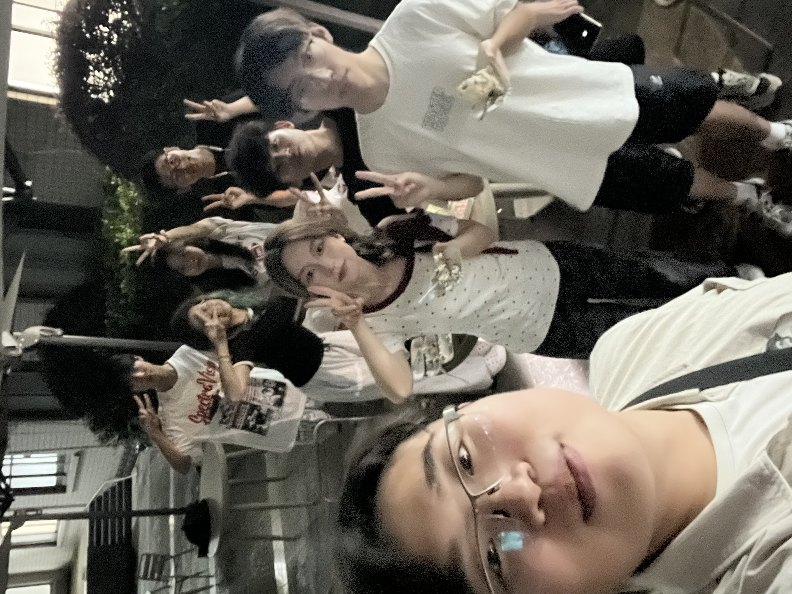
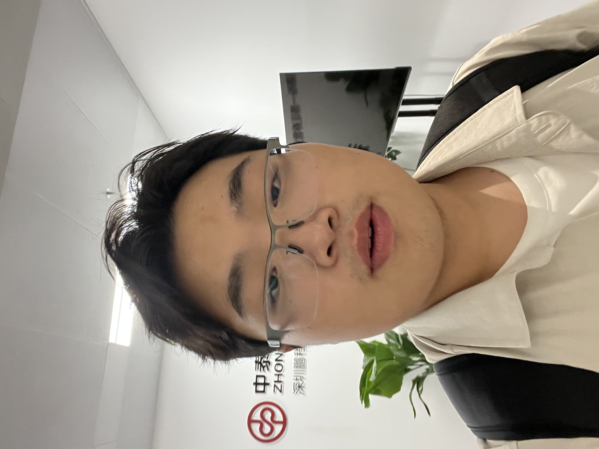
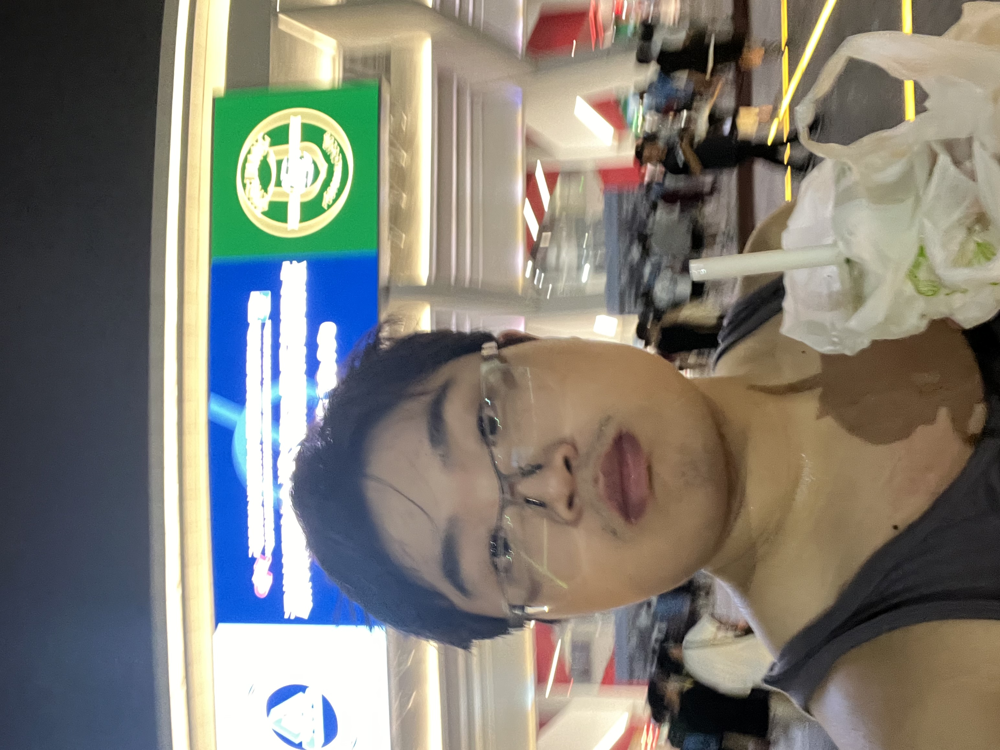
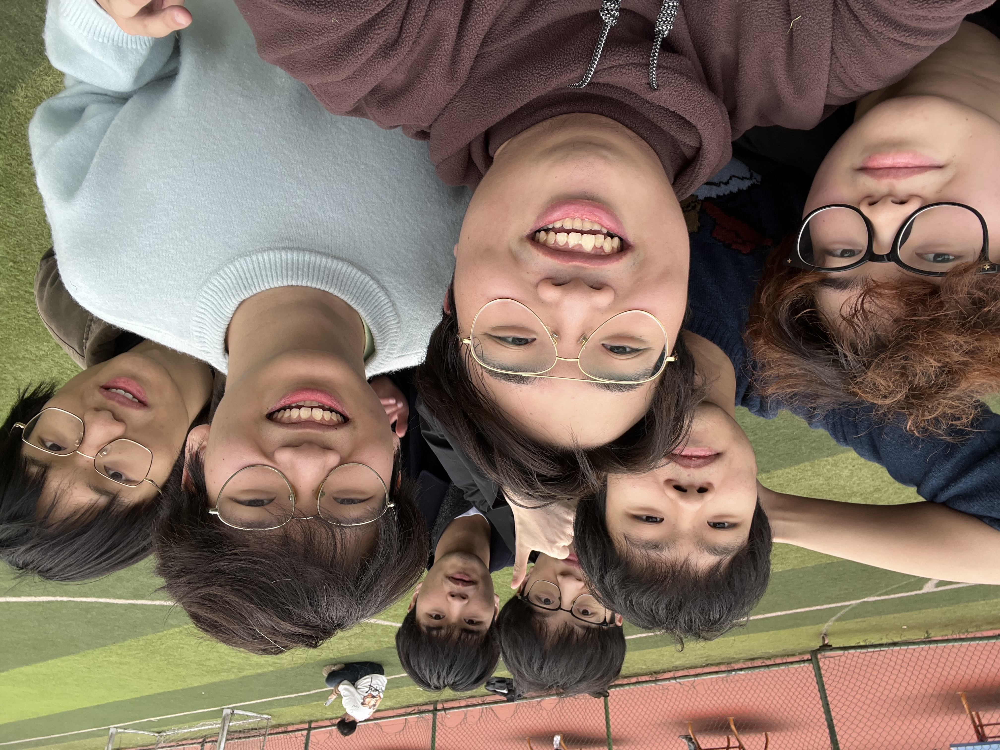
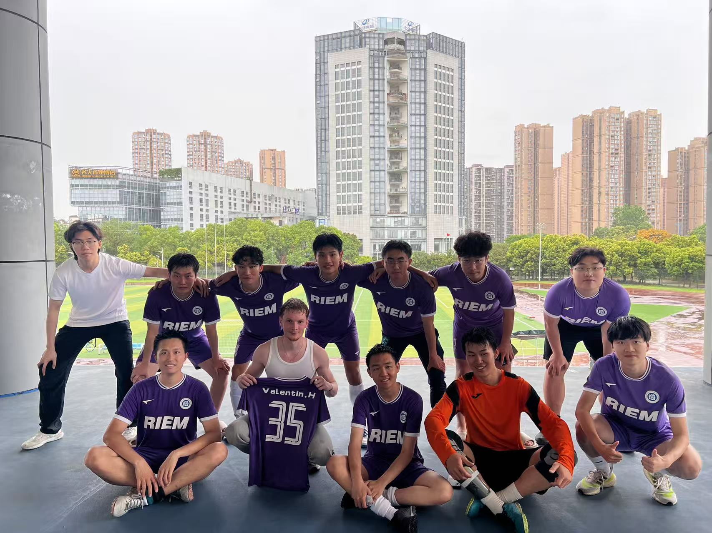

证券投资与建模
模拟与实盘经验、ETF 与行业轮动；金融科技建模与量化学习项目并行。
- · 全国 ETF 模拟赛（前 2% · 二等）
- · 校金融科技建模大赛（二等）
- · Top Analyst 行研挑战（三等）
SWUFE · Finance & management pilot · Fintech & Web3
来自重庆，西南财经大学金融（经管实验班）本科在读。关心交易与投研、金融科技与 Web3，也用数据抓取、建模和 LLM 工具提高交付效率。本站汇总公开项目、写作与简历入口。
金融逻辑、技术实现与制度叙事可以放在同一张表里讨论——关键是假设是否清楚、证据是否站得住。
向下滚动浏览（中心卡片会放大）
生活与旅途中的一些瞬间。










选自 github.com/fuxiaoji 的公开仓库；点击卡片跳转源码。
已将 `文章/` 中的文稿统一补充为 Markdown 版本，并单独提供文章页与阅读页。
收录 `note/` 目录下的日常笔记、课程总结与思维碎片，以文件树格式浏览。
这里是近期整理的个人笔记，涵盖了财务管理、中级微观经济学、中级宏观经济学、计量经济学、概率论等多门学科。点击“打开笔记页面”进入文件浏览器，可直接阅览 `.md` 文稿或预览 `.pdf` 课件。
与 PDF 简历一致的核心条目；更新以简历文件为准。
实习、项目或写作交流，欢迎发邮件；技术内容也可在 GitHub 上私信或提 Issue。
订阅（可选）
若日后接入 Newsletter，可在此放表单；目前请优先使用邮箱联系。